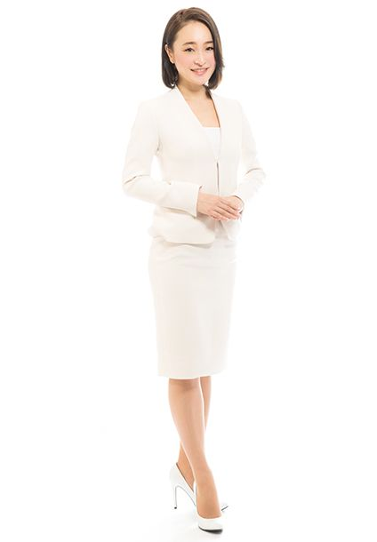
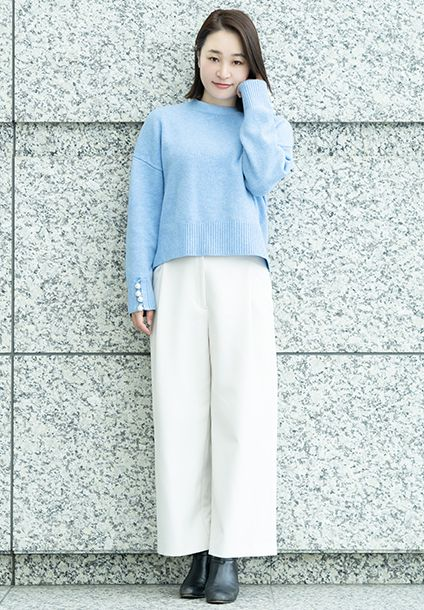

PROFILE
管香織




管香織Kaori Kan
| カテゴリ | MC/司会、ナレーター |
|---|---|
| 言語 | バイリンガル |
| 身長 | 164 |
| 趣味 | yoga、ランニング、和装、ジム、映画鑑賞、部屋の模様替え、掃除 |
| 特技 | 着付、華道 |
| 資格 | 書道3段
小原流華道 |
| 参考URL |
経歴
TV/VP
- TOKYO MX「THE VISIONARY～異才の花押～」（経済番組）キャスター
- 明治製菓「おやつのカール」cm
- SMAP×SMAP
- アルタビジョンcm
- ドーナツチェーンcmナレーション
- 東京エレクトロンデバイスVPナレーション
英語NA/バイリンガルMC
- ASEAN会議
- Asia partnership conference 日本製薬工業協会セミナー
- MOTO GP/ブリヂストン
- ジャガー ニューアンバサダーお披露目記者会見
- ランボルギーニオーナーズイベント
- 東京モーターショー/UDトラック クルージングパーティー
- 東京オリンピック50周年記念展 開会式
- インドネシアフェスティバル
- TMS UDトラック VIPクルージングパーティ
- 成田国際空港 第一旅客ターミナル リニューアル式典
- 成田国際空港 世界一周旅行者 歓迎式典
- 成田国際空港 航空旅客9億人達成式典
- 観光庁 訪日外国人1300万人達成式典
- 製薬会社 セミナー
- 積水ハウス 各国大使館VIPへのプレゼンテーション
- RED hat NFV mini summit
- UNO全国大会
- UNOアジア大会
- 国際のど自慢大会
- Tokyo game show パーティ
- NHK技術研究所 NA
- 国際Book fair NA
- エアアジアジャパン初便就航式典
- エアジャパン国際線就航式典
- terada universe セミナー、懇親会
- DNP プライベートショー
- バンダイナムコ ブースリポート
- 東京マラソンエキスポ
- ジャパンスリーデーマーチ式典
- 日本ウォーキング大会式典
- バイエルヘルスケア セミナー、バイエルヘルスケア 懇親会
- SAP セミナー
- 日経BPセミナー
- 医学会 ランチョンセミナー
- ツーリズムエキスポ
- もしもしにっぽんフェスティバル
表彰式
- 小学生SDGsサミット表彰式
- djane mag japan award
- 楽天 shop of the area 表彰式
- ジャパンウォーキング大会表彰式
- 東京都市町村総合体育大会表彰式
- 日野市駅伝表彰式
- 国分町駅伝表彰式
- アウディ ニッポンカップ表彰式
- HRサミット表彰式
- ソーラーフロンティア表彰式
- フィッシングショー授賞式
- クラシックカーショー表彰式
- エーザイ 新ドリンク 発売記念イベント
- JAPANスリーデーマーチ式典
- 地産地消料理コンテスト式典
- 東京建物式典
- セイコーゴールデングランプリ
- 廈門航空初便就航式典
- メトログループ カンファレンス表彰式
- Microsoftパーティー表彰式
- keisei バス 感謝祭
- 徳島県人会 式典
- ノボ ノルデイスクファーマ全社会議、表彰式、懇親会
- 大塚商会グループ懇親会
- CSLbehring懇親会、セミナー
- 環境省全国野生生物保護実績発表会表彰式
- 環境省野生の会表彰式
- 環境省ユース表彰式
- 農林水産大臣賞式典
- 東京商工会議所懇親会
イベント
- ASRock AMDイベント
- motoGP/ブリヂストン
- ドゥカティ 六本木ヒルズカフェイベント
- a-nation
- 東京国際映画祭
- 池袋西武イベント（美香）
- 千葉そごうイベント（秋本祐希）
- sweet mommy トークショー（熊田曜子）
- フリーピープルイベント（大屋夏南）
- 麻布テーラー men'sCLUB トークショー（鈴木啓太、戸賀敬城）
- 神戸コレクション（宮尾俊太郎）
- 東京ランウェイ（トリンドル玲奈）
- サンスター「VO5」発売記念ヘアショー
- 浅草サンバカーニバル
- ルパン三世 名探偵コナン THEMOVIE 公開記念イベント
- 伊豆諸島小笠原諸島フェア
- アメージングスパイダーマン 公開記念イベント
- ポルシェジャパン カンファレンス
- TOYOTA 新型ハイブリッド 代表者試乗会
- TOYOTA 新型クラウン 商品説明会
- プジョー 新作お披露目イベント
- シトロエン 新台発表
- volkswagen 分科会
- メディア対抗四時間耐久レース
- 地産地消料理コンテスト
- オクトーバーフェスト
- 野村不動産 proudシリーズ オーナー向けイベント
- 東北復興イベント
- ボサノバライブ
- 弦楽四重奏 コンサート
- sony aqualium ちゅら海水族館
- 三井ハウスセミナー
- 都内産農林水産物を使用した料理コンテスト
- 映画「機関車トーマス」公開記念イベント
- たまプラ 美人塾 トークショー司会進行
- FUJITSUパソコン教室
- macシリーズ
- SONY VAIOデモンストレーション
- 秋葉原PCゲームフェスタ
- カラダファクトリー
- NECデモンストレーション
- wild speedプロモーション
- Microsoftデモンストレーション
- 「機動戦士ガンダム戦記」発売記念
- PS3発売記念
- 東京アイランドフェア
- カルピス工場見学ツアー
- 雑誌「saita」×ヤクルト合同企画「市井紗耶香さんと作る親子料理教室」
- asia pacific corpolate games 綱引き大会
展示会
- CP＋/SONY MC
- デジタルサイネージ展/SONY MC
- インターロップ MC
- おもちゃショー/エポック社 MC
- TOY EXPO/エポック社 NA
- ケーブルテレビショーMC
- シーテック NA
- smart city EXPO MC
- ホスペックス MC
- 積水ハウス 住まいの夢博 NA
- セブンイレブン展示会 MC
- 新聞機器展/DICブース NA
- リフォーム＆インテリア expo/ミサワホームNA
- 東京PACK NA
- 環境産業フェア MC
- エコプロダクツ/ダイキン NA
- スマートフォン＆モバイルEXPO NA
- 住友不動産 リフォーム博 MC
- 国際木工機器展 NA
- 国際ガーデンエキスポ MC
- リテールテック/凸版印刷 MC
- ナノテクノロジー NA
- DIY SHOW MC
- Japan home show MC
- IT WEEK/ニフティ MC
オンラインMC
- JASIC 自動運転国際ルールシンポジウム（経済産業省・国土交通省・米国運輸省等）
- ウェルスナビ 上場打鐘セレモニー
- cpac japan 2020（日英）
- ボストンキャリアフォーラム（日英）
- 不動産投資ウェビナーカンファレンス（日英）
- 海外不動産投資セミナー（日英）
- 米国不動産投資webセミナー（日英）
- Porsche taycanインナー向け（日英）
- サクセスマークオンラインイベント
- サーモス「スープジャー」料理教室
発表会/式典
- 日本good year 2019プレスリリース
- 明治改元 150年記念 幕末維新回廊 山口県 プレスリリース
- JR東日本発足30周年記念コンサート記者発表
- フィンエアー夏季増便就航記念式典記者発表
- フィンエアー日本就航35周年記念式典
- jaguar ニューアンバサダーお披露目記者発表（錦織圭）
- ポルシェ記者発表
- fantastics from EXILE tribe デビューお披露目プレスリリース
- インドネシアエアアジアx 就航記念記者発表
- 環境省省エネ住宅推進大使記者発表会（壇蜜）
- コージーコーナー「夢のクリスマスケーキコンテスト2018」グランプリ受賞作品発表イベント（浜辺美波）
- 日の丸交通 ZMP 自動タクシーサービス
- ローソン ZMP 宅配ロボットサービス
- ゲンティンクルーズ 新航路発表会
- スーパースター ヴァーゴ 日本発着クルーズ
- ゲンティンドリームシンガポール発着プレスカンファレンス
- ドラマ「彼氏をローンで買いました」大ヒット祈願イベント（真野恵里菜、横浜流星）
- 帽子屋大賞
- ブリヂストン 自動運転技術開発 プレスリリース
- 東京プリンスホテル ビアガーデン プレスリリース
- 山口県 PRイベント プレスリリース
- 「ウェディングドレス女子会」PRイベント（菊地亜美、バイきんぐ小峠＆西村）
- Panasonic「嗅いでみたい！消してみたい！動物の気になるニオイ展」オープニングイベント（橋本マナミ）
- 新オーガニックブランド「Minery」ブランドリリース記念
- ジャガーF-PACE記者発表会
- ジャガー・ランドローバー・ジャパンアワードセレモニー
- フェアトレード イオン記者発表
- イオン 青森県フェア 記者発表
- UNO 新cm発表会
- スウォッチ新作発表会
- 上野動物園こどもパンダ大使お披露目発表会
- ダイソン新機種発表会
- ダイソン新商品発売記念イベント
- 成田国際空港 航空旅客数10億人達成式典 記者発表
- 成田国際空港 航空旅客9億人達成式典記者発表
- 成田国際空港訪日外国人1300万人達成式典 記者発表
- 成田国際空港 visitor service Center オープン式典
- 成田国際空港第三ターミナル 新規お披露目
- 成田空港第一ターミナル 和風庭園オープニングセレモニー
- 成田空港第二ターミナル グランドリニューアル 記者発表 式典
- エアアジアJAPAN初便就航式典 記者発表
- エアアジアJAPAN国際線就航式典 記者発表
- エチオピア航空 新規就航
- 東京オリンピック50周年式典
トークショー※タレント
- あべ静江、西村知美、松村邦洋、せんだみつお、川島海荷、北村匠海、山崎紘菜、山崎育三郎、足立梨花、小柳津林太郎、渡辺早織、フィッシャーズ、秋本祐希、浜辺美波、橋本マナミ、壇蜜、真野恵里菜、横浜流星、菊地亜美、バイきんぐ（小峠＆西村）、トリンドル玲奈、市井紗耶香、熊田曜子、中村瞳子、宮瀬いと、高島ひな、羽石杏奈、KABA.ちゃん、マテンロウ、パンサー、安田大サーカス団長、相席スタート、おかずクラブ
トークショー※モデル
- 大屋夏南、美香、秋本祐希、モーガン茉愛羅、春名亜美、もね、小柴ちはる、中嶋杏里
トークショー※声優
- 茶風林、日高のり子、堀江瞬、松田颯水、五十嵐裕美、安元洋貴、三瓶由布子、machico、南早紀、八巻アンナ、熊田茜
トークショー※スポーツ
- 錦織圭(テニスプレーヤー)、宮里藍（プロゴルファー）、五郎丸歩（ラグビー）、丹羽孝希（卓球）、平野美宇（卓球）、荻原次晴（元スキーノルディック複合選手）、立石諒（元競泳選手）、望月重良(元サッカー日本代表)、鈴木啓太（元サッカー日本代表）、宮尾俊太郎（バレリーナ）、福澤翔（車椅子バスケ選手）、宇城元（パワーリフティング）、樋口健太郎（パワーリフティング）、福山英朗（レーシングドライバー）、服部茂章（レーシングドライバー）
- 清水和夫（モータージャーナリスト）、五味康隆（モータージャーナリスト）
- 竹岡圭（モータージャーナリスト）、岡崎五郎（モータージャーナリスト）
- 亀田興毅（格闘家）
トークショー※ライダー
- J.ロレンソ、ダニ ペドロサ、V.ロッシ、A.ドヴィツィオーゾ、N.ヘイデン、C.エドワーズ、B.スピーズ、ケーシーストーナー、マルコシモンチェリ
トークショー※作家、アーティスト、クリエイター
- 谷川俊太郎、甲斐みのり、野々村友紀子（放送作家）、安彦良和（漫画家、アニメーター）、四谷啓太郎（漫画家）、中井精也（鉄道写真家）、石川直樹（写真家）、大山顕（写真家）、久方広之（写真家）、沖昌之（写真家）、水口哲也（クリエイター、ゲームデザイナー）、立川陽介（水彩画家 アーティスト）、齋藤精一（Creative Director / Technical Director ）、jun imai (デザイナー)
トークショー※料理研究家、料理人
- 服部幸應、脇雅代、平野レミ、杉本恵子、森崎友紀、野永喜三夫
ｃアーティスト
- つのだ☆ひろ、マークパンサー、山越藍子（シャンソン歌手）、FANTATICS from EXILE tribe、RAG FAIR、スキマスイッチ、ピチカートファイブ野宮真貴、田中公平（作曲家）
トークショー※その他
- 小田切ヒロ（ヘアメイクアップアーティスト）、今泉亮爾(ヘアーアーティスト)、松本拓馬(スタイリスト)、前田仁土（スタイリスト）、柴田充（ライター）、加藤哲也（カーグラフィック代表）、村上政（ENGINE編集長）、鵜飼誠（モデルカーズ編集長）、戸賀敬城（men'sCLUB編集長）、若林恵（『WIRED』日本版 編集長）、子供パンダ大使
セミナー/フォーラム
- ZMPフォーラム
- 環境ビジネスフォーラム
- 日本IBMセミナー
- Microsoftセミナー
- Adobeセミナー
- 日経BPセミナー
- 大日本印刷セミナー
- フリースケールセミナー
- SAPセミナー
- synopsisセミナー
- HRサミット
- 経営プロセミナー
- レッドホットフォーラム セミナー
- サイボーズ セミナー
- FXセミナー
- ひまわり証券 インナーセミナー
- 住友不動産セミナー
- 東京建物セミナー
- 三井不動産セミナー
- オリオン株式会社 セミナー司会進行
- TOYOTA社内向けセミナー
- ポルシェ社内向けセミナー
- volkswargen社内向けセミナー
- プジョー社内向けセミナー
- シトロエン社内向けセミナー
- Asia partnership conference 日本製薬工業協会セミナー
- 日本統合失調症学会
- バイエルヘルスケアセミナー
- グラクソスミススタインセミナー
- 日本在宅医療学会学術集会
- 癌学会
- 婦人科産婦人科学会
- フロイト産業プレゼンテーション
- 全国医療介護セミナー
- メディカルケアステーションセミナー
- CSL behring会議 懇親会